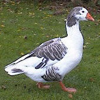

À la Saint Miché les pithots et à Noué les picots. Ch'est chein qu'lé vièr diton nos dit. Et au temps pâssé nou mangeait s'lon les saîsons. Achteu nou n'a pon grand sens du touônnement d'l'année et nou peut fricoter coumme nou veurt sans r'garder si ch'est Avri ou Dézembre. Dgieu mèrcie qu'i' y'a acouo eune dêfouithie d'nos Rouoyales. Quand nou r'garde des vièrs photos du marchi auve d's ênormes êtalages dé picots à Noué, nou comprend coumme tchi qu'lé conmèrce a changi. Ch'est en tchi au jour d'aniet ché s'sait pus à co les pizzas à la Saint Miché et du pain nân' auve un curry à Noué.
Et la saîson d'Noué est bein pus longue au jour d'aniet, v'là tch'est eune difféthence d'auve les fêtes dé nos anchêtres. D'vant les beusses et les vaituthes, y'avait bein d'gens d'la campangne tchi né v'naient janmais en Ville, sénon à Noué. Ch'tait eune touônnée spéciale qué viagi au marchi. Nou soulait vilyi à la Longue Veil'ye - eune couôteunme tchi duthit jusqu'à la Preunmié Dgèrre Mondiale, à chein tch'i' pathaît. Ch'tait eune séthée d'fête et d'travas l'23 d'Dézembre. Les femmes soulaient ouvrer et ag'ver des cauches, des corsets et tout l'restant d'l'ouvrage, et d'la brod'die et d'aut' choses à vendre. Y'avait des gammes, et d'la chant'tie, et d'la caqu'téthie coumme touos les pithots du mathais. Épis la Sèrvelle dé Noué nou v'nait en Ville au marchi vendre sa marchandise et acater dé tchi pouor l'année. Et pouor bein des gens ch'tait la seule fais qu'nou v'nait en Ville.
|
|
j'avons des pithots |
Viyiz étout: